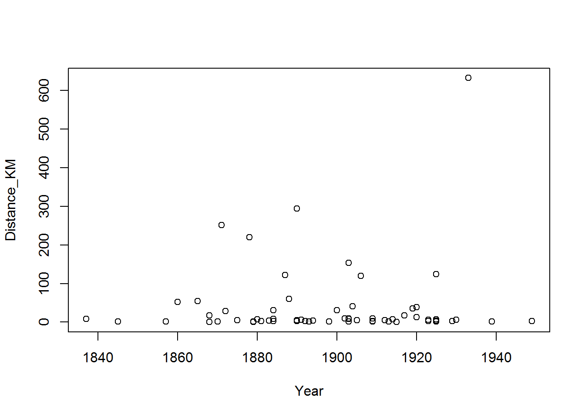
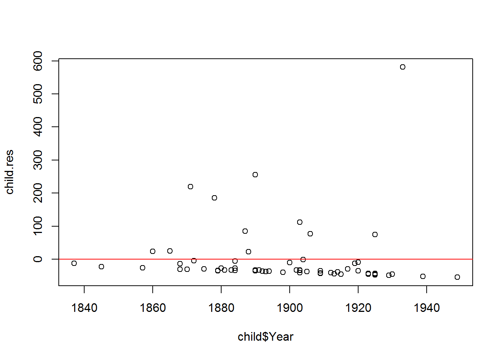
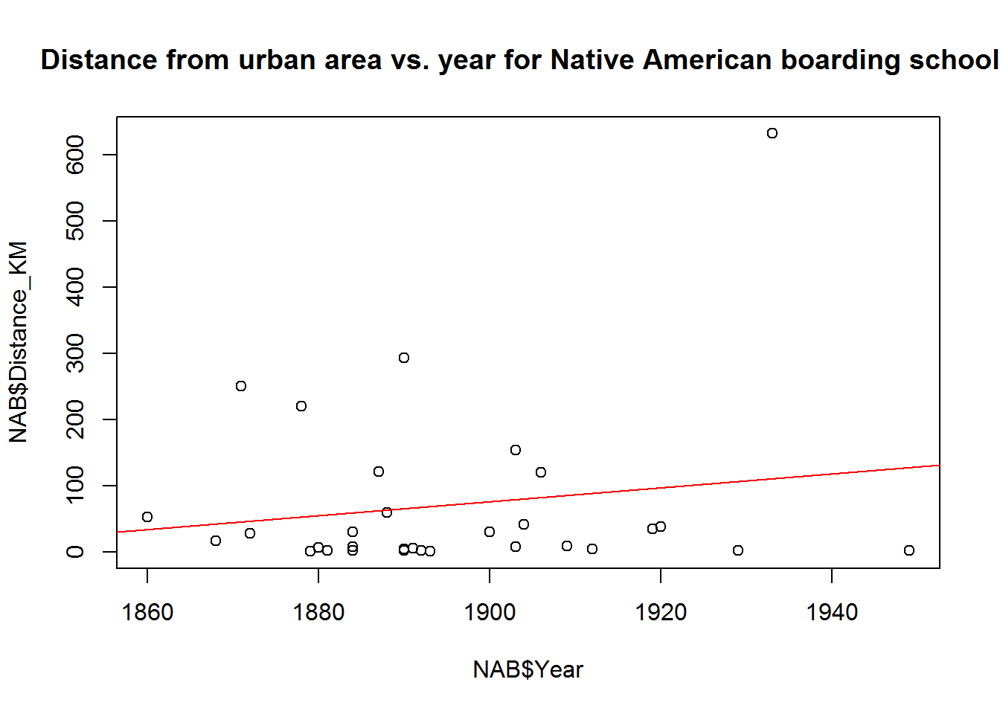
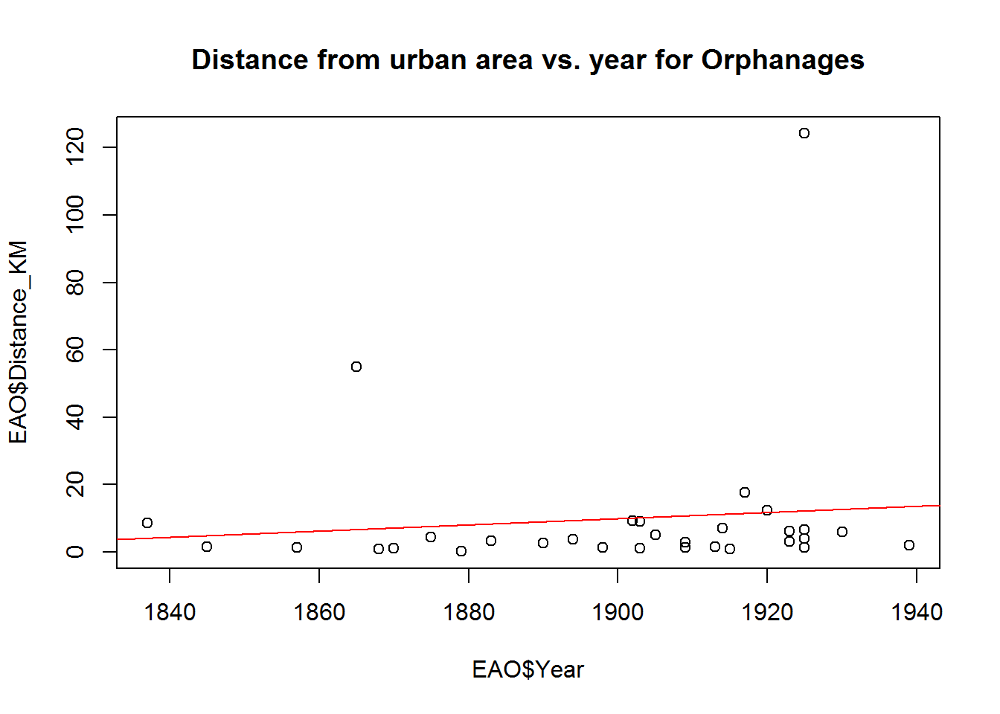
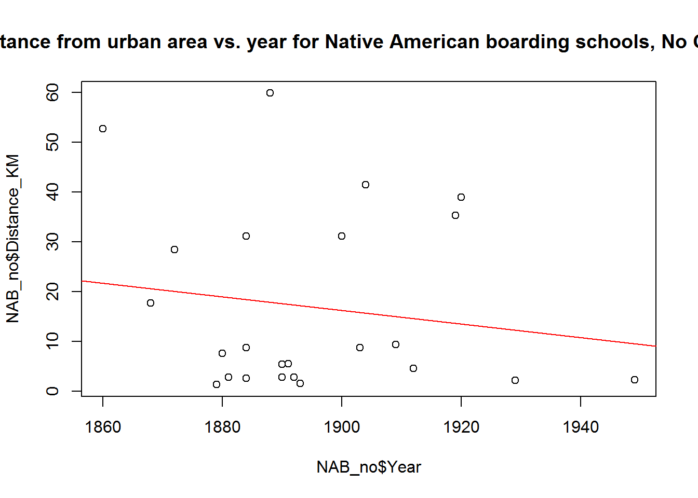
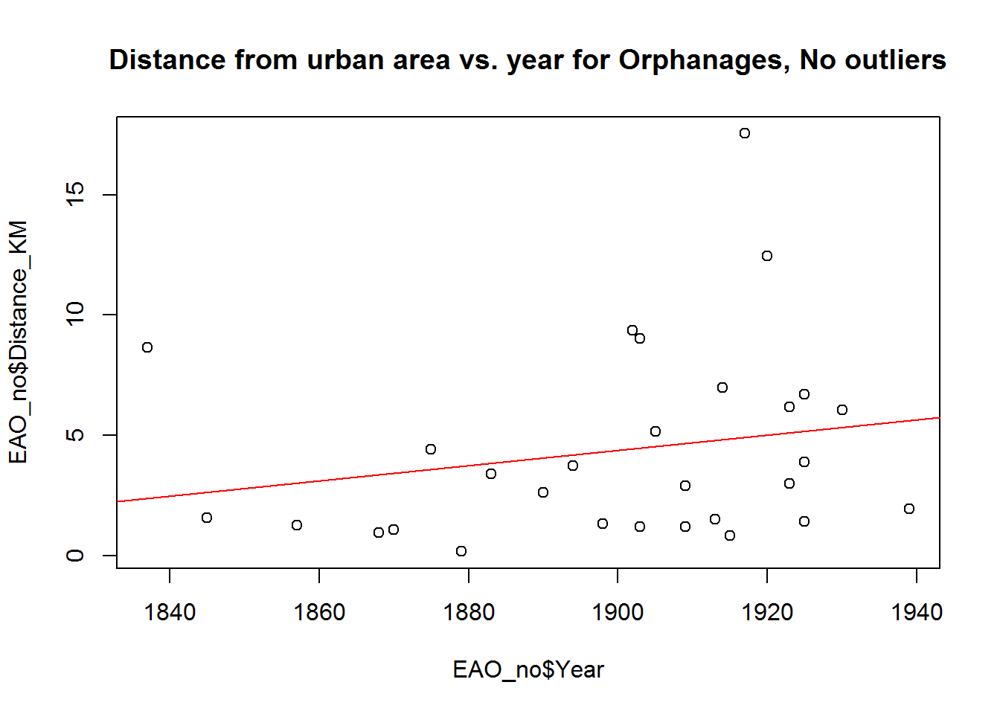

Chapter 3 Using linear models to explore children’s institutions in urban areas
Paulina Przystupa
3.0.1 Introduction
Hi, my name is Paulina and I was interested in looking at the placement of children’s institutions through time in relation to urban areas. Historical documents suggest that in the United States starting in the late 1800s and into the 1900s more and more Americans believed that rural and natural environments were good for raising children. These ideas started appearing in child-rearing literature initially aimed at middle-class parents. However, I wondered if these same beliefs applied to those who ran children’s institutions. Children’s institutions, such as orphanages and Native American Boarding schools, also rose to prominence at this time but were situated between the middle-class sensibilities of those forming such institutions and the practical service such places provided. To see if such institutions conformed to this idea I collected a sample of 62 children’s institutions, half Native American boarding schools, and half Orphanages to see if through time their relationship to urban areas changed. Specifically, I was interested in examining it as a linear trend, one where through time such institutions are built farther from urban areas.
3.0.1.1 Import the data into R
After collecting my data, which consisted of a list of institutions, and finding out the distances, I used as-the-crow-flies distance to their city hall as my measure, I loaded the comma separated file or csv into R. You can save CSV files from excel and a lot of other workbook or table formats. You can also just load tables directly into R.
child = read.csv("Combined_Orph_NA_data.csv")3.0.1.2 Exploratory data analysis
I wanted to just look at the data together and see what the relationship to time was so I did a basic scatter plot
plot(Distance_KM ~ Year,
data = child)
It doesn’t look like a particularly strong trend but I can test this by fitting a linear regression model to see what is going on with my data using:
child.lm = lm(Distance_KM ~ Year,
data = child)
summary(child.lm)##
## Call:
## lm(formula = Distance_KM ~ Year, data = child)
##
## Residuals:
## Min 1Q Median 3Q Max
## -54.39 -39.15 -32.77 -10.56 580.95
##
## Coefficients:
## Estimate Std. Error t value Pr(>|t|)
## (Intercept) -556.8124 1021.2532 -0.545 0.588
## Year 0.3148 0.5382 0.585 0.561
##
## Residual standard error: 98.38 on 60 degrees of freedom
## Multiple R-squared: 0.005668, Adjusted R-squared: -0.0109
## F-statistic: 0.342 on 1 and 60 DF, p-value: 0.5609This creates a linear regression of the dependent variable, distance in kilometers, to the independent variable time, as stated in years, and provides me with the coefficients for the intercept, which is listed under the Estimate and (intercept), and slope, which is the estimate under the year, as well as the R-squared values. R squared is a metric that allows us to understand how well the linear regression model explains our data. The call for linear model lm() includes two types of R squared, multiple and adjusted. It looks like for this case the multiple R-squared, or just R-squared, is .005 which means that only about half a percent of the data is predicted by our model. The adjusted R-squared includes the number of points used to create the model. Essentially it examines how meaningful the R is based on the n of your sample. This is so you can compare the strength of different models with different samples used to calculate them. It can go up or down depending on the sample. In this case, the adjusted-R squared does not improve when we adjust for the size of the sample. Lastly, the p-value, which is the liklihood that this is random, is nowhere near significant. So the combination of the p-value and my rather unhelpful R-squared values suggests there’s limited explanatory value in a linear regression for this sample combined sample.
3.0.1.3 Residuals
While I’m here I’ll also plot the residuals for the data set overall to see if there are any trends with those, which may alter my choice in data set or the methods I should apply to it.
child.res = resid(child.lm)
plot(child$Year, child.res)
abline(h = 0, col = "red")
summary(lm(child.res~child$Year))##
## Call:
## lm(formula = child.res ~ child$Year)
##
## Residuals:
## Min 1Q Median 3Q Max
## -54.39 -39.15 -32.77 -10.56 580.95
##
## Coefficients:
## Estimate Std. Error t value Pr(>|t|)
## (Intercept) -4.299e-13 1.021e+03 0 1
## child$Year 2.332e-16 5.382e-01 0 1
##
## Residual standard error: 98.38 on 60 degrees of freedom
## Multiple R-squared: 2.221e-32, Adjusted R-squared: -0.01667
## F-statistic: 1.332e-30 on 1 and 60 DF, p-value: 1Looking at the plot it doesn’t appear that there is any trend in the residuals and further more it has a p-value of 1 suggesting it is completely random. Which is what we want. If there were at trend in the residuals we might be looking at much more complicated data set and other statistical analysis of the data.
3.0.1.4 Subsetting the data
However, as I noted earlier that I included two different types of children’s institution, so maybe each have different trends. To examine them separately I can use subset
NAB = subset(child,
Instit_Type == "NAB")
EAO = subset(child,
Instit_Type == "O")So now I can look at them separately, plotting distance per year for each institution
plot(NAB$Distance_KM ~ NAB$Year,
main = "Distance from urban area vs. year for Native American boarding schools")
abline(lm(NAB$Distance_KM~NAB$Year),
col = "red")
plot(EAO$Distance_KM~EAO$Year,
main = "Distance from urban area vs. year for Orphanages")
abline(lm(EAO$Distance_KM~EAO$Year),
col = "red")
This view looks like there may be some increasing trends but there are some significant outliers. Looking at the R-squared for those trend lines
summary(lm(NAB$Distance_KM ~ NAB$Year))##
## Call:
## lm(formula = NAB$Distance_KM ~ NAB$Year)
##
## Residuals:
## Min 1Q Median 3Q Max
## -125.35 -61.93 -50.54 7.54 521.78
##
## Coefficients:
## Estimate Std. Error t value Pr(>|t|)
## (Intercept) -1922.736 2248.163 -0.855 0.399
## NAB$Year 1.052 1.186 0.887 0.382
##
## Residual standard error: 130.8 on 29 degrees of freedom
## Multiple R-squared: 0.02641, Adjusted R-squared: -0.007167
## F-statistic: 0.7865 on 1 and 29 DF, p-value: 0.3825summary(lm(EAO$Distance_KM ~ EAO$Year))##
## Call:
## lm(formula = EAO$Distance_KM ~ EAO$Year)
##
## Residuals:
## Min 1Q Median 3Q Max
## -11.499 -8.345 -5.816 -3.257 112.002
##
## Coefficients:
## Estimate Std. Error t value Pr(>|t|)
## (Intercept) -163.22363 310.73304 -0.525 0.603
## EAO$Year 0.09112 0.16357 0.557 0.582
##
## Residual standard error: 23.67 on 29 degrees of freedom
## Multiple R-squared: 0.01059, Adjusted R-squared: -0.02353
## F-statistic: 0.3103 on 1 and 29 DF, p-value: 0.58183.0.1.5 Removing outliers
The r-squared values are still really low and my p-values are not significant. So it might be useful to remove the outliers. However, it doesn’t look like they have outliers at the same distance so for the orphanages I’m only going to look at ones that were less than 50 km, which removes two of my locations, while for Native American boarding schools I looked at ones that were less than 100 km.
NAB_no = subset(NAB, NAB$Distance_KM < 100)
EAO_no = subset(EAO, EAO$Distance_KM < 50)Then I re-plot them
plot(NAB_no$Distance_KM~NAB_no$Year,
main = "Distance from urban area vs. year for Native American boarding schools, No Outliers")
abline(lm(NAB_no$Distance_KM ~ NAB_no$Year),
col = "red")
plot(EAO_no$Distance_KM~EAO_no$Year,
main = "Distance from urban area vs. year for Orphanages, No outliers")
abline(lm(EAO_no$Distance_KM ~ EAO_no$Year),
col = "red")
So some trends, perhaps ones I’m not very happy with considering one of them is negative , but lets look at a summary of the regression lines:
summary(lm(NAB_no$Distance_KM ~ NAB_no$Year))##
## Call:
## lm(formula = NAB_no$Distance_KM ~ NAB_no$Year)
##
## Residuals:
## Min 1Q Median 3Q Max
## -17.729 -12.717 -8.454 13.324 41.998
##
## Coefficients:
## Estimate Std. Error t value Pr(>|t|)
## (Intercept) 274.6597 353.0894 0.778 0.445
## NAB_no$Year -0.1360 0.1863 -0.730 0.473
##
## Residual standard error: 18.23 on 22 degrees of freedom
## Multiple R-squared: 0.02366, Adjusted R-squared: -0.02072
## F-statistic: 0.5331 on 1 and 22 DF, p-value: 0.473summary(lm(EAO_no$Distance_KM ~ EAO_no$Year))##
## Call:
## lm(formula = EAO_no$Distance_KM ~ EAO_no$Year)
##
## Residuals:
## Min 1Q Median 3Q Max
## -4.018 -2.991 -1.268 1.083 12.644
##
## Coefficients:
## Estimate Std. Error t value Pr(>|t|)
## (Intercept) -55.77391 55.17205 -1.011 0.321
## EAO_no$Year 0.03165 0.02904 1.090 0.285
##
## Residual standard error: 4.013 on 27 degrees of freedom
## Multiple R-squared: 0.04215, Adjusted R-squared: 0.006675
## F-statistic: 1.188 on 1 and 27 DF, p-value: 0.28533.0.2 Summary
Unfortunately neither of those was significant either. So it looks like linear regression, regardless of whether the institutions are lumped together, institutions are separated by type, and whether or not they include outliers does not support the hypothesis that children’s homes were built farther from urban areas through time. They all have very low R-squared values and insignificant p-values. However, there may be some interesting differences examining the trends before and after 1900, which I explored in other presentations. So while linear regression might not fit this data other methods may help us to understand what sort of trend we may be seeing.
sessionInfo()## R version 3.3.3 (2017-03-06)
## Platform: x86_64-w64-mingw32/x64 (64-bit)
## Running under: Windows 7 x64 (build 7601) Service Pack 1
##
## locale:
## [1] LC_COLLATE=English_Australia.1252 LC_CTYPE=English_Australia.1252
## [3] LC_MONETARY=English_Australia.1252 LC_NUMERIC=C
## [5] LC_TIME=English_Australia.1252
##
## attached base packages:
## [1] stats graphics grDevices utils datasets base
##
## loaded via a namespace (and not attached):
## [1] backports_1.0.5 bookdown_0.3.16 magrittr_1.5 rprojroot_1.2
## [5] tools_3.3.3 htmltools_0.3.5 yaml_2.1.14 Rcpp_0.12.10
## [9] stringi_1.1.3 rmarkdown_1.4 knitr_1.15.17 methods_3.3.3
## [13] stringr_1.2.0 digest_0.6.12 evaluate_0.10